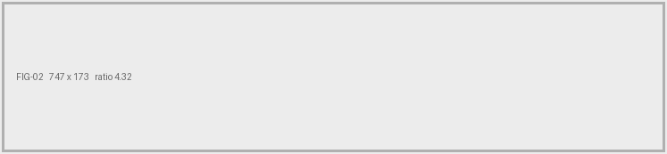
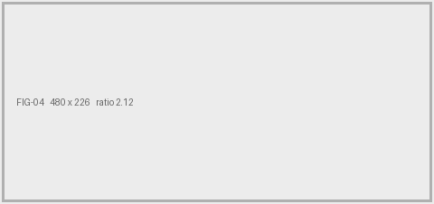

DR-0NN
Document review · [[REVIEW DATE]]
Product datasheet [[PRODUCT]],
read as a tender attachment.
The current published datasheet for the [[PRODUCT]] was read against the requirement specification in Bilag 2, requirement by requirement. Nothing here is a score. The buyer scores.
Method
Bilag 2 sets sixty numbered requirements. Twenty-six ask for a delivery plan, an option price or a complaints procedure, which no product datasheet answers. Thirty-four remain.
Answered means the document states the thing the buyer asks for. Partial means close but off the point. Absent means there is nothing to point at.
The count
[[Word]] of
thirty-four
can be
answered.
Krav [[list]]. [[what they cover, one phrase]].
Krav [[list]]. [[why each is only partial]].
Krav [[list]]. [[the one thing worth saying about them]].
Scored as one document. [[What the rest of the published set is, and whether the absences hold across it. Only sayable because the family was checked — see the pre-flight.]]
Findings / Sheet 2
DR-0NN
Four things an evaluator meets first.
![[[What the crop shows, for a reader who cannot see it.]]](fig-01.png)
Finding 01 / Krav [[n]][[ · weight of 100]]
[[Claim, max 38 characters.]]
«[[The requirement, verbatim. Max 80 characters.]]»
[[What the document does about it. Max 90 characters.]]

Finding 02 / Krav [[n]][[ · weight of 100]]
[[Claim, max 38 characters.]]
«[[The requirement, verbatim. Max 80 characters.]]»
[[What the document does about it. Max 90 characters.]]
![[[What the crop shows, for a reader who cannot see it.]]](fig-03.png)
Finding 03 / Krav [[n]][[ · weight of 100]]
[[Claim, max 38 characters.]]
«[[The requirement, verbatim. Max 80 characters.]]»
[[What the document does about it. Max 90 characters.]]

Finding 04 / Krav [[n]][[ · weight of 100]]
[[Claim, max 38 characters.]]
«[[The requirement, verbatim. Max 80 characters.]]»
[[What the document does about it. Max 90 characters.]]
[[One closing line. Something true that is not a finding.]]